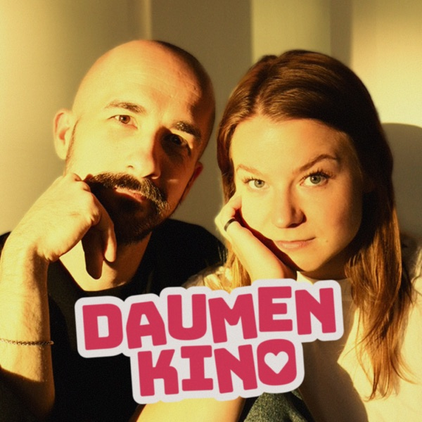

Filme. Gefühle. Halbwissen.Mit Ann-Sophie & Rafael
Daumenkino
Große Filme. Kurze Meinung.

Podcast: Weniger labern.
Mehr Kino.
Ein Film, zwei Meinungen, ein, zwei Minuten. Kurz genug für den Weg ins Kino.
Andere App? Per RSS abonnieren